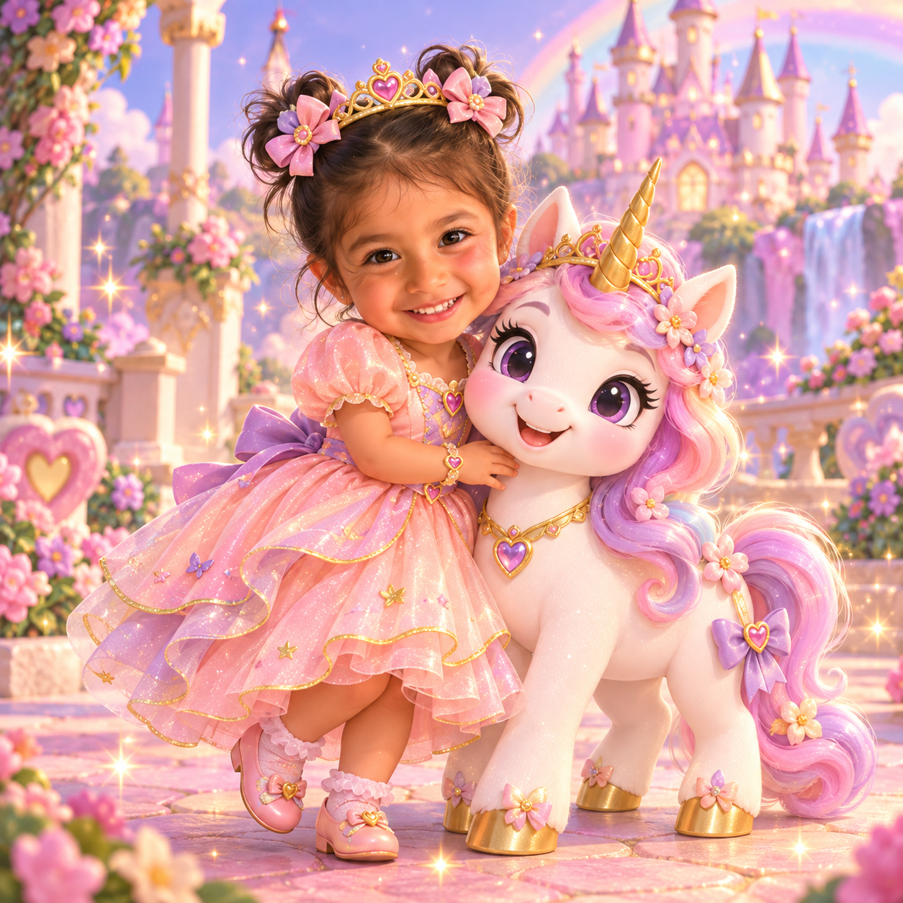

¡Hola, Sofía! ✨
¿Lista para una aventura mágica con Luna?

¡Mira todo lo que has descubierto!
Las estrellas celebran tus juegos e intentos.
🌷 Cada intento cuenta. No pasa nada si hoy todavía estás aprendiendo.
¿Qué exploramos hoy?
Podemos practicar juntos. Tú marcas el ritmo. 💜
¿Adónde vamos, Sofía?
Elige un lugar y empieza a explorar. Puedes volver cuando quieras. 💜
✨ Todos los lugares están disponibles. No hay niveles que perder ni caminos bloqueados.
¿Qué nos dice el cuerpo?
A veces el cuerpo nos avisa cuando queremos hacer pipí o popó. Podemos parar un momento y escuchar.
¡Vamos a decirlo juntos!
Luna está jugando y nota que quizá necesita ir al baño. ¿Qué puede decir?
Pasito a pasito 🌈
Un adulto te acompaña. Puedes pedir ayuda cuando quieras.
No hace falta completar todos los pasos cada vez. Aprender toma tiempo.
La canción de Luna
Una canción cortita para recordar que puedes escuchar tu cuerpo y pedir ayuda.
yo lo voy a escuchar.
Le aviso a alguien grande:
«¡Quiero ir al baño ya!» 🎶
La voz del navegador puede variar según el dispositivo. No se necesita enviar audio a internet.
¡Mira todo lo que crece! 🌼
Las estrellas son por practicar, aprender y pedir ayuda.
Tu jardín crece cuando juegas, exploras y practicas. No necesitas hacerlo perfecto. 💗
La misión del baño
Podemos practicar los pasos. Una persona grande te acompaña. No necesitas hacer pipí para terminar la aventura.
1. Escucho mi cuerpo
Si siento ganas, puedo avisar.
Si hoy no quieres, podemos parar. ¡Tú marcas el ritmo! 💗
Encuentra las parejas
Toca dos tarjetas y encuentra los dibujos iguales.
No pasa nada si no encuentras una pareja. ¡Podemos intentarlo otra vez!
¿Qué te gustaría usar?
Elige tu conjunto favorito para la aventura de hoy.
Modo familia
Un espacio privado para acompañar sin presionar.
Entrada para mamá y papá
Resuelve esta suma para abrir el panel.
Es una barrera sencilla para evitar toques accidentales, no una contraseña segura.
Registro amable
Registra lo que observaste, sin convertirlo en una calificación.
Los registros se guardan solo en este navegador. Evita escribir información médica sensible.
Rutina tranquila
Usa estos ajustes como recordatorios para ti, no como órdenes para Sofía.
No hay notificaciones en segundo plano. Respeta las señales de Sofía y evita insistir si no quiere.
Historial reciente
Todavía no hay registros.